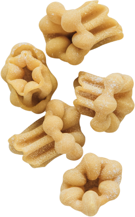
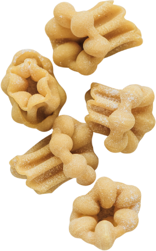

樂乃農場
民生食品
產品介紹
用心研磨每顆鮮麥，以時間濾出小麥的原始香氣跟風味，
就像來到知其所食的老義大利時代，用餐即是愉悅的享受。


麥子品質是關鍵！麥子的品種、硬度及蛋白質含量，左右了麵的口感、吸水度及最重要的風味， 以獨家比例調配出最佳風味的手工義大利麵，為的就是留在你口中那淡淡的麥香。
復刻過去的老義大利時代，將整顆鮮麥，連同麥麩、胚芽、麥皮，一起放入石臼研磨， 石臼的轉速慢、磨溫低，避免了大型機械因高溫、高壓對小麥的有效營養和品質產生破壞， 花費2倍以上的時間及成本，只為完整保留全麥的全營養！

你沒看錯！鮮麥現磨現做的義大利麵只需下鍋60秒，就能達到義大利人心中， 沒有麵粉生味，仍保有一點生麵心，彈牙鮮嫩的口感， 與市面上的廠製乾燥義大利麵較為扎實有嚼勁的口感截然不同。
15款造型的手工麵，每日以石臼輾磨新鮮麥穀製麵，保留小麥最完整的營養及纖維， 口感鮮、嫩、Q，細細咀嚼還會有淡淡的麥香。並顛覆傳統，一種麵搭配一種醬，道道都是絕配！
To keep the fifteen of fresh homemade pasta best flavor, we made them every single day. That’s why we insist on pasta making procedure, starting from the very beginning- mill our flour in kitchen.
純粹簡單的肉類料理是義大利人最熟悉的家常味，多源自家中傳承下來的手藝滋味， 完全根據自己的記憶、經驗及喜好料理出專屬於家的滋味！讓下廚的人創造料理的愉悅， 吃的人享受料理的用心滋味。
Our traditional main course tastes like Italian grandmother made it. We cook meat with seasonal vegetable, add some spices and herbs for stewing few hours. So simple, so perfect.
精彩的特色開胃菜，由威尼斯的義籍主廚Antonio親自研發， 義式料理必備的起司、醃肉、海鮮等經典食材變化出多元的開胃菜， 還有費工費時的自家製料理，手作美味讓人回味無窮，就在沈浸美味之餘悄悄打開你的食慾！
We are proud of homemade appetizer such as casatella cheese, bresaola and sausage. These fantastic recipes are all from our Italian chef, Antonio. “Cooking is an act of love, a gift, a way of sharing with others the little secrets -- ‘piccoli segreti’ -- that are simmering on the burners. “said Sophia Loren.


享用了甜點才算是吃了完整的一餐。 甜點在義大利的重要性就像電影《教父》所說「Leave the gun, take the cannoli. 槍不要，把西西里捲帶走。」，讓黑手黨大老都失去戒心了！
Say Yes to Dessert! It is perfect ending to a great meal so enjoy the gelato, tiramisu or panna cotta. Oh! Please don't miss out our signature dessert: Cannoli it is Italian pastries of the Sicily region. Crispy on the outside, tender on the inside, and so tasty!

Tortellini為義大利文肚臍的意思，另有肚臍餃之稱。 五種顏色分別加入了墨魚、甜菜根、胡蘿蔔、菠菜等天然食材製成，依照顏色分別搭配五種不同餡料， 每口都是驚喜！
Tortellini is ring-shaped pasta, sometimes also described as "navel shaped". We fill variety of pasta sheet up with five kinds of seafood mousse. It is really great taste in your mouth when savoring the flavors of each mouthful.
如紙一般輕薄柔軟的現做麵皮，經過清洗、搓揉、晾乾繁複的動作， 與肉醬層層交疊烘烤，在口中構成麵皮與餡料最平衡的滋味。
As classic Italian dishes, we think lasagne should be kept simple – homemade flat-shaped pasta sheet, layering with savory meat sauce, creamy bèchamel, and parmigiano. Its taste is flavorful, and that'll make you feel satisfied.

使用甜菜根、胡蘿蔔、菠菜等天然食材製成三色義大利麵， 貝殼的外型除了有趣還能微微容納醬汁及切成丁狀的食材！
This small, seashell-shaped pasta originates from Italy, it is specifically designed to hold more sauce. We make the shell pasta with beetroot, carrot and spinach puree. It is interesting and yummy.
 


2023聖誕蛋糕
三澧餐飲集團今年特別帶來3款風味別緻，用料實在的美味聖誕蛋糕陪您共度聖誕佳節。
預購日: 11/15-12/20
取貨日: 12/1-12/31
香榭藍莓起司 / 7吋 1100元
抹茶紅豆塔 / 7吋 1100元...
2023.11.14


台北 巫小姐
「香辣多汁，真材實料！一試成主顧，讓我一嚐再嚐，尤其是露營出去玩最方便。」

台北 巫小姐
「香辣多汁，真材實料！一試成主顧，讓我一嚐再嚐，尤其是露營出去玩最方便。」
台北 巫小姐
「香辣多汁，真材實料！一試成主顧，讓我一嚐再嚐，尤其是露營出去玩最方便。」